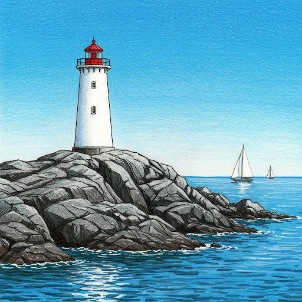
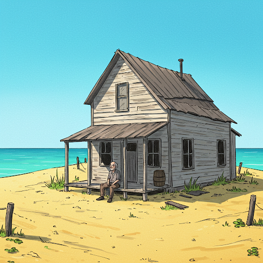
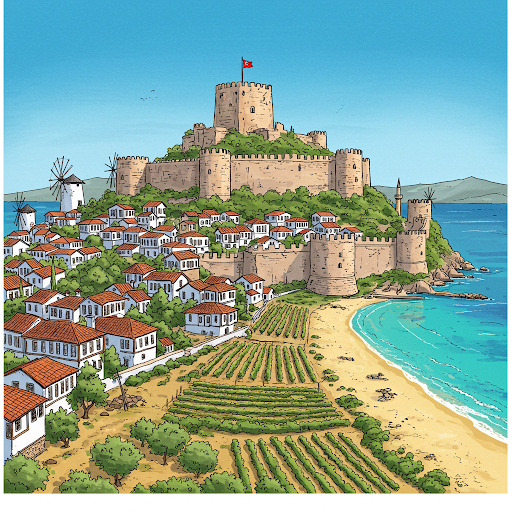
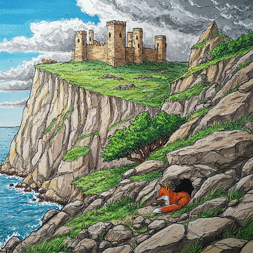
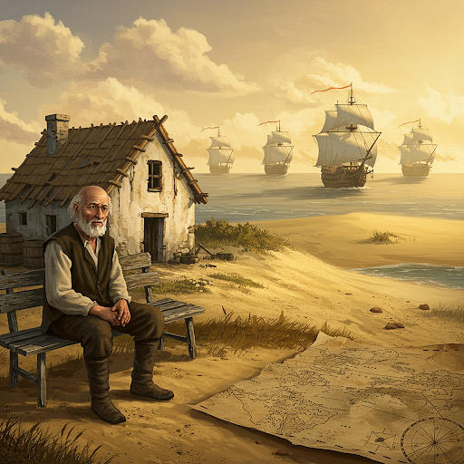
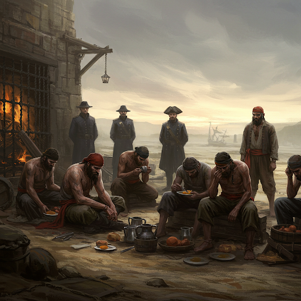
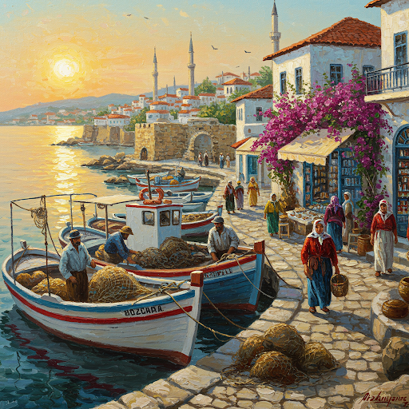
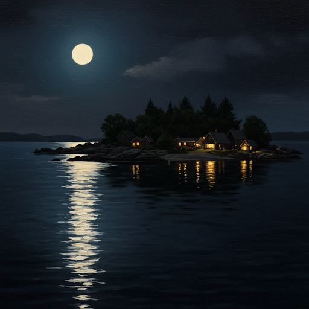
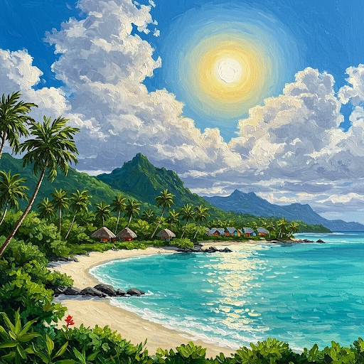
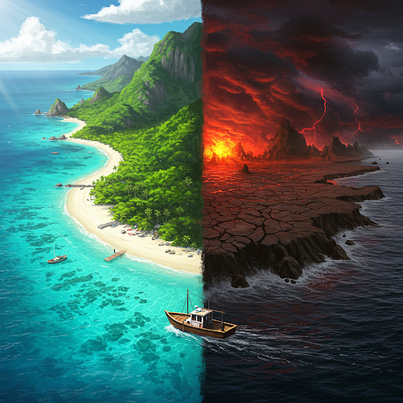

Adı Soyadı: Ege Özçelik
Sınıfı: 9/B
Numarası: 229
Konu: Forsa
"Forsa" hikayesindeki ada, ıssız ve kayalık bir yerdi. Mahkumlar, zincirlere vurulmuş, sessizce bekliyorlardı. Denizin uğultusu ve martıların çığlıkları dışında hiçbir ses duyulmuyordu. Ada, sanki zamanın durduğu bir yerdi.
Bozcaada ise hareketli ve canlı bir adadır. Rüzgar, adanın sokaklarında uğuldar, denizin dalgaları kıyıya vurur. Tarihi kale, adanın geçmişine tanıklık eder. Adanın şirin evleri, renkli sokakları ve lezzetli yemekleri, ziyaretçilere keyifli bir deneyim sunar.
"Benim Mekanım", "Forsa" adası ve Bozcaada'nın birleşiminden oluşan kurgusal bir adadır. Adada, "Forsa" adasındaki kayalıklar ve vahşi hayvanlar ile Bozcaada'daki kale kalıntıları ve rüzgarlı hava bir araya gelmiştir. Adanın atmosferi, hem vahşi hem de tarihi bir gizem taşır.
"Forsa" hikayesi, esaretin ve özgürlüğün önemini vurgular. Hikaye, umudun ve direncin insan hayatındaki önemini gösterir. Adalar, hem sığınak hem de sürgün yeri olabilirler. Önemli olan, adaların bize ne öğrettiğidir.
Mahkumlar, güneşin ilk ışıklarıyla uyanırlar. Gardiyanların sert bakışları altında, güne zorlu işlerle başlarlar. Yemekleri, karınlarını doyurmaktan çok, hayatta kalmalarını sağlayan birer lokmadır. Umutsuzluk, adanın her köşesine sinmiştir.
Bozcaada'da ise hayat, güneşin doğuşuyla canlanır. Balıkçılar denize açılır, esnaf dükkanlarını açar. Turistler, adanın tarihi ve doğal güzelliklerini keşfetmek için sokaklara dökülür. Ada, neşe ve umutla doludur.
"Benim Mekanım"da gece, sessiz ve ürkütücüdür. Rüzgarın uğultusu, mahkumların fısıltılarına karışır. Kale kalıntıları, geçmişin hayaletlerini andırır. Ada, karanlığın ve gizemin kucağında uykuya dalar.
"Forsa" hikayesi, bize esaretin ve özgürlüğün değerini hatırlatır. Hikaye, insan ruhunun direncini ve umudun gücünü gösterir. Adalar, hem sığınak hem de sürgün yeri olabilirler. Önemli olan, adaların bize ne öğrettiğidir.
Adalar, hem iyi hem de Kötü olabilirler. Önemli olan, adaların bize ne öğrettiğidir. "Forsa" hikayesi, bize esaretin ve özgürlüğün değerini hatırlatır. Umutsuzluk Kayalığı, "Forsa" hikayesinin ve Bozcaada'nın birleşimiyle oluşan bir kurgusal adadır. Bu ada, bize adaların farklı yüzlerini gösterir.
Hazırlayan: Ege Özçelik, 9/B